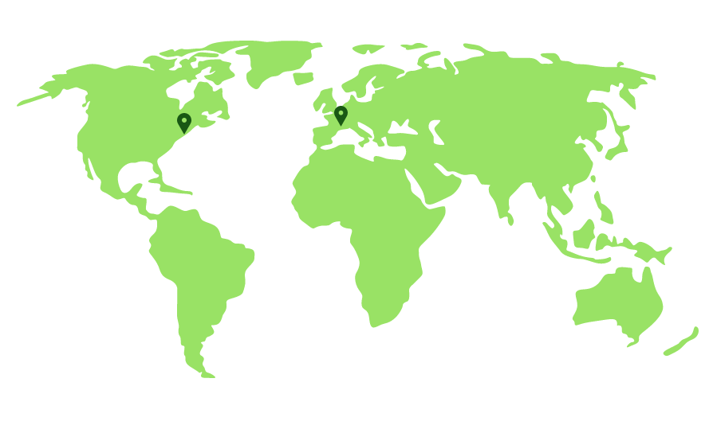

Ithaca, NY
Bachelor of Science in Industrial and Labor Relations, May 2018
Minor: Inequality Studies
Paris, France
Spring Semester Abroad, January 2017-May 2017
Financial Accounting
Marketing
Statistics
Human Resources Management
Introductory Design and Programming for the Web
History of the Israeli Palestinian Conflict
Media Communication
Green Growth, Sustainability, and the New Economy
Economics of Wages and Employment
Intercultural Communication
Organizational Behavior
Comparative Physiology
Micro- and Macro- Economics
Global Comparative Disability Policy
Essential Desktop Applications
Economic Analysis of the University
Labor History
Labor Relations
Uncovering Corporate Strategies
Gendered Workplace
Worker's Rights and Human Rights
Controversies About Inequality
Ethics of Eating
Race and Public Policy